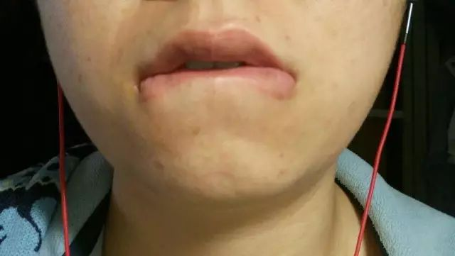
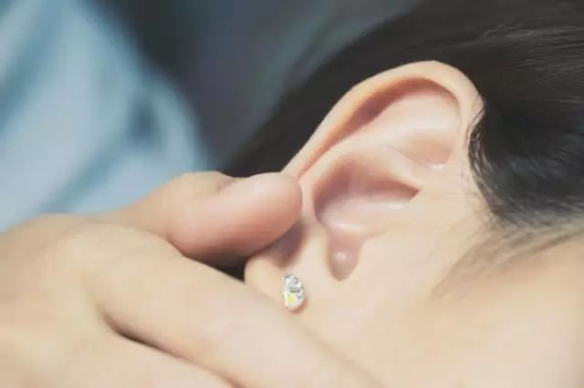
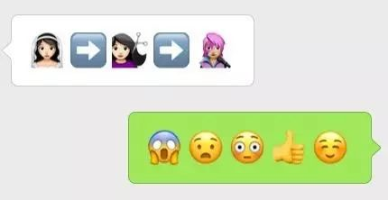

坐上来 | 征稿 - 关于女性的身体记忆，我们想听听你的故事
酷拉君
酷儿论坛
2017-04-30
酷儿论坛

motss2002
杭州酷儿论坛（motss.info）致力于为杭州及周边地区学生性少数人群提供一个多元、健康、平等的环境，促进自我认同和社会认可。
- 身体与身份 -
身体是自然的存在
却又无时不在世俗的框架里
古有“樱桃樊素口，杨柳小蛮腰”
今有“锥子脸配大眼睛，大长腿搭A4腰”
铺天盖地的美照
不是在女性身体的歌颂
而是一种隐晦的背叛
- 关于记录 -
比起美丽，我们更在乎真实
比起他人的描述，我们更希望知道你的感受
我们希望记录此刻的你
以及你身边的她
真实的身体及感受
它可能是
长歪了的牙齿
有赘肉的肚子
刚刚吃了李子的嘴
偷偷窥向心上人的眼
性别转换中的模样
甚至
只是一个身体习惯
它可能不太好看
但有性情
可能不是一份合格的作品
但有温度
例如下面这些作品
胸

在这里呀，
有两只不团结友爱的小兔子
朝着两个方向发育，不遵循“动物的向光性”
反倒是遵循万有引力定律
下垂着且娇羞着
图片 / L 文字 / L
嘴唇

我记得小的时候
暴躁地弹钢琴
总是错，总是错
那个时候我就发现
咬嘴唇是多么好的自我惩罚措施
后来就成了习惯
做任何我不熟悉的事情的时候
总是会咬着嘴唇
训练的时候，老师一遍遍说
别咬嘴唇！丑死了！
越是这样，越是忍不住
疼痛让我舒服，让我觉得
接受了惩罚，错的事就此揭过
图片 / 萍菏 文字 / 萍菏
耳朵

我真的超羡慕那种
可以安详地躺在妈妈的腿上
被温柔的摆弄耳朵
被笑着嗔怪再乱动就要变成小聋子的小朋友呢
在看到电影中出现的温情画面后
我假装不经意的对草说这些
所以你以前从来没有被掏耳朵过吗
草温柔而好奇的问我
没有哦，我都是自己弄的
身为一个只在三岁以前拥有母亲的小孩
怎么会有呢
那么，你现在要不要尝试一下呢？
啊？
我可是为了未来女朋友
准备了一整套的掏耳朵小工具呢
照片 / 麋鹿 文字 / 麋鹿
头发

记忆中 小时候
我的妈妈拥有一头温柔又活泼的黑长直
长发栖息在胸口 伸手可及
阳光下 边缘跳动着微光
直到有一天 她出门去——
我惊恐地瞪着眼前的短发爆炸头“阿姨”
努力抗拒这个陌生人要抱起我的企图
我哭着问
我的妈妈呢？
你们把她弄到哪里去了？
“阿姨”笑着对我说
我就是你的妈妈呀
无论变成什么样
我都是你的妈妈呀
文字 / 青山
手
把“L ”纹在手上
这一抹禁色
是我的姓氏，是她的姓氏
也是爱
愿某地方，不需将爱伤害，抹杀内心的色彩
别怕，爱本是无罪
图片 / 某俩 文字 / 六月
眼睛
皱纹添满了我的眼角
我老了，被称作“大姐”
走南闯北后
我看见自己躺在我女儿的旁边
忽然想起
在二十多年前
我也有过一双和二十多岁的她一样美丽的眼
直到生活将我的眼角扯来扯去
我奔波于人情冷暖中
很少流泪，从不认输
却一直记得有晚女儿问我
妈妈，为什么你的眼睛肿肿的？
图片 / 阿桃 文字 / 一芒
下面重点来了
我们正！在！征！稿！
我们希望通过记录关于女性的身体记忆
让更多女性正视自己的身体
消除羞耻感
唤醒独特的感官体验
如果你愿意
传达你的身体记忆
或者你愿意
传达身边其她女性的身体记忆
无论其性别/性向/年龄/地域/职业/身心状况
我们都热切地期待着
您能将身体与感受分享予我们
形式不限、呈现风格不限、规模不限
下期，我们将看到有关“眼睛”的记忆
如果你有任何独特的情感、记忆或故事
欢迎来稿
投稿邮箱：mybodymemory@163.com
截稿时间：2017年4月30日（星期日）
如若采用，我们还有一笔50元的稿费，聊表谢意
文 / 六月 编辑 / 萧遥 排版 / 吴越
向【酷拉君】回复“M”，获取目录以及更多好玩的关键词！
点评时事、艺术、文化
打破二元对立的陈规定势
发展凶猛有力的华语酷儿论述
投稿/联络：QueerLala2013@gmail.com
微信【酷拉君】: QueerLalaTimes
长按二维码向我转账
“”

受苹果公司新规定影响，微信 iOS 版的赞赏功能被关闭，可通过二维码转账支持公众号。
微信扫一扫
关注该公众号
关注该公众号
使用小程序